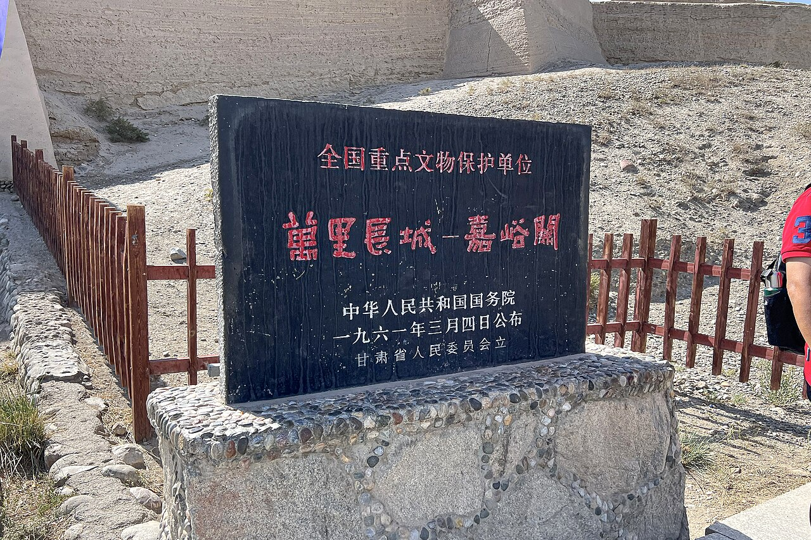

额济纳旗位于内蒙古最西端，每年 9 月下旬至 10 月中旬，十万亩胡杨林化为金色海洋，吸引全国摄影与自驾爱好者。线路常从银川或酒泉出发，串联怪树林、居延海、黑城遗址与巴丹吉林沙漠边缘。
胡杨林景区分一至八道桥，二道桥倒影、四道桥英雄林、八道桥沙漠交界最为经典。怪树林是枯死胡杨形成的「千年不倒」雕塑群，适合剪影与星空。居延海日出与黑城遗址的苍凉形成人文与自然双重叙事。
旺季（国庆前后）住宿价格飙升且一房难求，建议提前 1–2 个月预订。旗府达来呼布镇是餐饮与补给中心。尊重自然，勿攀折胡杨枝，景区内需跟随观光车或规定路线行走。
Itinerary
分日行程
银川/酒泉 → 额济纳旗
长途戈壁公路，注意限速与疲劳驾驶。傍晚抵达达来呼布镇，采购次日景区所需水粮。若从酒泉方向来，可顺访东风航天城外围（遵守保密规定）。
胡杨林一道桥至四道桥
清晨进园，二道桥拍水边胡杨倒影，四道桥英雄林树形最为遒劲。光线以清晨与傍晚为佳，中午平光适合休息。景区大巴串联各桥，勿擅自进入未开放区域。
五至八道桥与沙漠边缘
八道桥与巴丹吉林沙漠接壤，可体验沙漠越野（选择正规运营商）。七道桥较年轻胡杨，色彩可能更早转黄。注意防风沙，相机备防尘罩。
怪树林 → 黑城 → 居延海
怪树林适合日落剪影，黑城遗址讲述西夏历史。凌晨或清晨赴居延海看日出，湖面与芦苇在晨光中泛金。一日行程较长，需协调好时间。
额济纳 → 返程或延伸
可原路返回银川/酒泉，或北进策勒、南下敦煌。检查车辆空滤，戈壁细沙可能已积累。
Photo Essay
沿途影像




Highlights
核心景点
二道桥胡杨
水边胡杨与倒影是额济纳最上镜场景之一。无风清晨如镜面，摄影者需耐心等光。
四道桥英雄林
树形最为苍劲，干粗枝疏，像戈壁上的勇士。10 月上旬色彩通常达到巅峰。
怪树林
枯死胡杨屹立不倒，日落时分剪影如地狱与天堂交界。是理解「生而不死三千年」后半句的最佳地点。
居延海
戈壁中的绿洲湖泊，日出时天空与水面渐层色彩丰富。冬季可观赏大量水鸟。
黑城遗址
西夏黑水城遗骸，城墙与佛塔在沙漠风中逐渐风化。与胡杨金林形成强烈历史对照。
Route
途经站点
旗府基地
餐饮住宿集中，景区入口在此附近。
倒影拍摄
建议清晨入园。
英雄林
核心摄影点，人流最大。
沙漠交界
可体验沙漠项目。
日出圣地
需凌晨出发，备厚衣物。
Practical
实用信息
- 国庆黄金周住宿紧张，提前预订或错峰（9 月底、10 月中旬）。
- 戈壁昼夜温差大，即使白天炎热也需备抓绒与防风外套。
- 尊重胡杨保护规定，勿攀折树枝或在树上刻字。
- 怪树林、居延海部分区域无遮阴，备足饮用水与防晒。
- 摄影时注意三脚架稳固，戈壁风大易倾倒设备。
EV Tips
新能源出行提示
驾驶腾势 N7 等纯电 SUV 出发前，请特别注意以下事项：
- 达来呼布、酒泉、银川有快充，额济纳旗内充电点有限，每日回镇后务必补满电。
- 景区间距离不长但停留时间长，留意电量勿在戈壁抛锚。
- 风沙天气清洁充电口后再补电，并检查空滤状况。